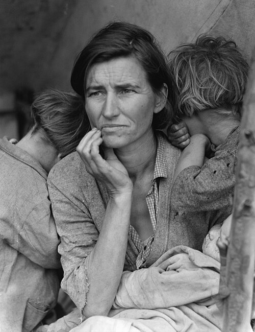
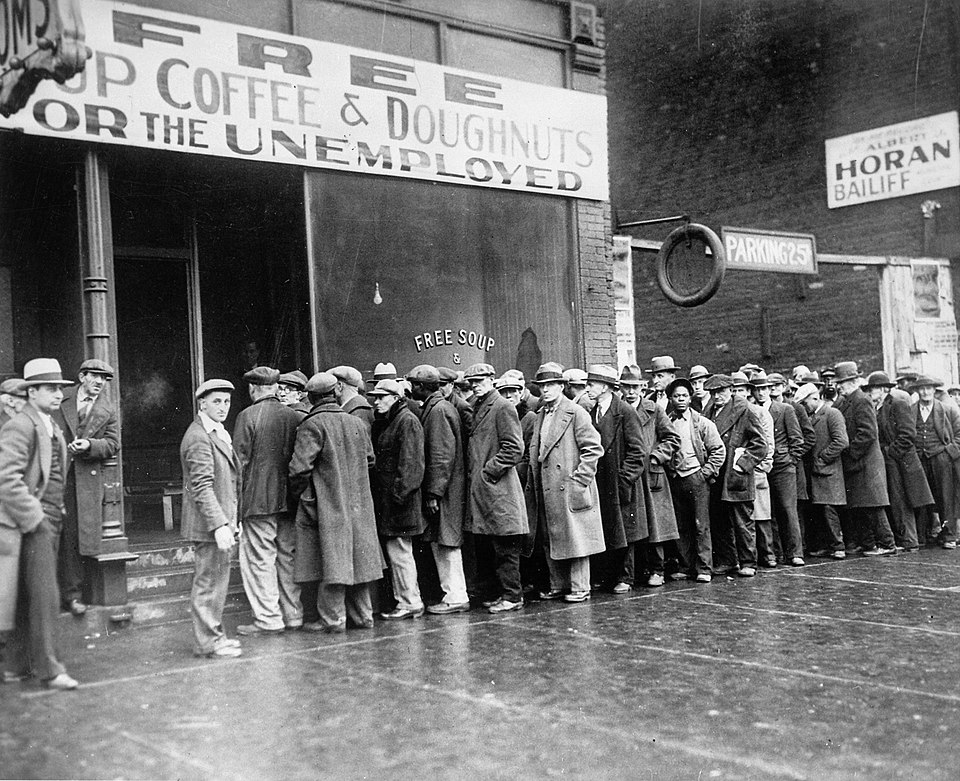

1.1 What Is Economics? Scarcity and Economic Thinking
- Scarcity = unlimited wants + limited resources. This gap forces every person and society to choose.
- Economics studies those choices. Microeconomics = individuals and firms. Macroeconomics = the whole economy.
- Needs are survival requirements (food, shelter, clothing). Wants are everything else layered on top.
- Goods are tangible things you can touch (durable, nondurable, consumer, or capital). Services are intangible work performed for you.
- For something to have high value it needs both scarcity AND utility. That is why diamonds cost more than water even though water keeps you alive - the paradox of value.
- TINSTAAFL: someone always pays, even when something looks free to you.
- Every society must answer three questions: WHAT to produce, HOW to produce it, and FOR WHOM.
Tap a term for its definition.
-
Definition: The fundamental economic problem of having limited resources to meet seemingly unlimited wants.
-
Definition: The social science that studies how people use scarce resources to satisfy unlimited wants and needs.
-
Definition: The study of the choices made by individuals, households, and individual businesses.
-
Definition: The study of the economy as a whole - inflation, unemployment, national output.
-
Definition: A basic requirement for survival, such as food, clothing, or shelter.
-
Definition: Something a person would like to have but does not need to survive.
-
Definition: A tangible item that satisfies a want or need.
-
Definition: Work or labor performed for someone else; intangible.
-
Definition: A good that lasts three years or more with regular use.
-
Definition: A good that wears out, is used up, or lasts less than three years.
-
Definition: A good intended for final use by individuals.
-
Definition: A tool or piece of equipment used by a business to produce other goods.
-
Definition: The monetary worth of a good or service.
-
Definition: The capacity of a good or service to be useful and provide satisfaction.
-
Definition: The apparent contradiction that essential items (like water) often cost less than nonessential items (like diamonds).
-
Definition: The accumulation of tangible products that are scarce, useful, and transferable.
-
Definition: "There Is No Such Thing As A Free Lunch" - every choice has a cost because resources are scarce.
-
Definition: The act of selecting one option from a set of alternatives. Because resources are scarce, every choice means giving something else up.
Every economic decision - what to eat, what to study, what to buy, what career to pursue - is shaped by one stubborn fact: resources are limited, but the things people want are not. Time, money, energy, and the world's natural resources are all finite. The list of things people would like to have is essentially endless. Economics is the study of how individuals and societies deal with that gap.
Scarcity - the core problem
Even a person with a thousand dollars cannot buy everything they want. Add up everyone's wants across an entire country and the gap gets even bigger. There are simply not enough resources on Earth to produce every good and service that every person would like to have.
That gap has a name: scarcity is the condition that results from society not having enough resources to produce all the things people would like to have. Scarcity is not the same thing as poverty. A billionaire still faces scarcity - they only have 24 hours in a day, and they cannot be in two places at once. Scarcity is the fundamental economic problem facing every person and every society.
Because resources are scarce, every person and every society is forced to make choices. Economics is the study of how people make those choices.

Florence Owens Thompson, photographed by Dorothea Lange in Nipomo, California, 1936. The image became a symbol of scarcity and hardship during the Great Depression. Dorothea Lange / Farm Security Administration. Public domain.
Micro vs. macro
Economists divide the field into two zoom levels:
- Microeconomics - the close-up view. It studies the choices of individual people, households, and businesses. (Should I buy AirPods or save for a car? Should this restaurant raise its prices?)
- Macroeconomics - the wide-angle view. It studies the economy as a whole. (Why is unemployment up? Why are prices in the U.S. rising faster this year than last year?)
This course uses both. Most of Unit 1 is micro - individual choices, spending, and personal finance.
Needs vs. wants
Economists make a careful distinction between two words people often mix up:
- A need is a basic requirement for survival - food, clothing, shelter, basic medical care.
- A want is something you would like to have but do not need to survive - a new phone, a concert ticket, a specific brand of sneakers.
The line is not always sharp. You need food to live, but you do not need sushi. The food is the need; the sushi is the want layered on top of it. Almost every product you buy is some mix of need and want. Economists care about this distinction because needs and wants behave differently in markets - people will pay almost any price for a true need, but they will walk away from a want if the price gets too high.
Goods and services
When you trade money for something useful, that "something" is called an economic product. Economic products come in two flavors.
Goods - tangible items
A good is a tangible item that satisfies a want or need - a textbook, a pair of shoes, a phone, a bottle of water. Economists sort goods into a few useful categories. Don't memorize them as trivia - notice that the categories overlap. A car can be both a durable good and a consumer good at the same time.
- Durable good - lasts three years or more with regular use. Cars, refrigerators, tools, laptops.
- Nondurable good - wears out, gets used up, or lasts less than three years. Food, gasoline, soap, most clothing.
- Consumer good - intended for final use by a regular person, not a business. Your sneakers are a consumer good.
- Capital good - a tool, machine, or piece of equipment a business uses to make other goods. A pizza oven at Domino's is a capital good; the pizza you buy is a consumer good.
An industrial factory in the Swansea valley, Wales. The machinery, furnaces, and equipment inside are capital goods - tools a business uses to produce other goods. The products shipped out are consumer goods. Public domain.
Services (work performed for you)
A service is work or labor someone performs for someone else - a haircut, a doctor's appointment, a Spotify subscription, a teacher's instruction, a Netflix stream. The key difference: a good is something you can touch; a service is not.
Value, utility, and the paradox of value
Here is a puzzle that bothered philosophers for hundreds of years. Water is essential for life - you would literally die without it - yet a bottle of water costs about a dollar. Diamonds are basically useless for survival, yet a small one can cost thousands. Why is the thing you cannot live without so cheap, and the thing you do not need so expensive?
This puzzle is called the paradox of value. The Scottish economist Adam Smith cracked it in 1776 in his famous book The Wealth of Nations. His answer takes two ideas:
- Scarcity - how rare something is.
- Utility - the capacity of a good or service to be useful and provide satisfaction to someone.
For something to have high monetary value - a worth that can be measured in dollars - it has to have both scarcity and utility. Water has lots of utility but, in most places, it is not scarce, so its price stays low. Diamonds have some utility (they're pretty, they cut hard materials) and they are extremely scarce, so their price is high. Mystery solved.

Adam Smith (1723-1790), Scottish economist. His 1776 book The Wealth of Nations laid the foundation for modern economics and solved the paradox of value. Known as the Muir portrait, artist unknown, c. 1800, after a medallion by James Tassie. Scottish National Gallery. Public domain.
One important note about utility: it is not fixed and it is not the same for everyone. One person may get massive satisfaction from a concert ticket; their friend might find the same concert boring. Utility lives in the head of the person using the product.
Wealth
A country's wealth is everything tangible, scarce, useful, and transferable that it owns: natural resources, factories, houses, cars, roads, and equipment. Services do not count as wealth - a haircut cannot be stored or passed to someone else.
TINSTAAFL - there is no such thing as a free lunch
Because resources are scarce, everything has a cost - even when it looks free. Economists abbreviate this with the awkward but memorable acronym TINSTAAFL: There Is No Such Thing As A Free Lunch.
A "buy one, get one free" sandwich is not actually free. The restaurant still paid for the bread, the meat, the worker, the electricity, and the rent. That cost gets baked into the price of the first sandwich. Somewhere, somebody paid. Every time something looks free, ask yourself who is actually paying.
The three economic questions every society must answer
Because no society can produce everything its people want, every society - no matter how rich, poor, capitalist, or communist - has to answer three questions:
- WHAT to produce? Should we use our limited steel and labor to build hospitals or fighter jets? Luxury apartments or affordable housing? Streaming shows or news?
- HOW to produce it? Use lots of machines and few workers, or fewer machines and more workers? Build in the U.S. or overseas? Use clean energy or cheap energy?
- FOR WHOM to produce it? Who actually gets the stuff once it's made? The people who can pay the most? The people who need it most? The people the government chooses?
Different countries answer these three questions very differently. In North Korea, the government decides almost everything. In the United States, consumers' spending decisions answer most of the "WHAT" question - companies make what people are willing to pay for. Sections 1.3 and 1.4 compare those systems in detail.
Notice that the third question, FOR WHOM, is not just an economic question - it is also an ethical one. Who deserves what? Is it fair that some people can afford more than others? Economists do not always answer those questions, but they do recognize that choices have moral dimensions, not just financial ones.

Men queue outside a Chicago soup kitchen, February 1931. When resources fall drastically short of demand, every society confronts the hardest version of the third economic question: for whom are goods produced? National Archives and Records Administration. Public domain.
So what does an economist actually do?
Economics is a social science - it studies human behavior using evidence and reasoning. Economists do four things:
- Describe - measure what's happening. (Example: gross domestic product, or GDP, is the total dollar value of all final goods and services produced inside a country in a year. It's the most common scoreboard for an economy.)
- Analyze - ask why. Why are some prices high and others low? Why do some people earn more than others?
- Explain - communicate findings clearly so other people can use, check, or argue with them.
- Predict - forecast what will probably happen next. Will inflation rise? Will hiring slow down?
Good economic decisions are not just the job of economists. In a democracy, voters decide budgets, tax laws, and trade policy. Reading a news headline about tariffs, interest rates, or unemployment requires the same tools economists use - which is the point of studying economics in the first place.
Quick recap before the quiz
- Scarcity is the gap between unlimited wants and limited resources. It forces choices.
- Economics studies those choices - micro (small scale) and macro (big scale).
- Needs are required for survival; wants are not.
- Goods are tangible (durable, nondurable, consumer, capital); services are intangible work.
- Value requires both scarcity AND utility - that is the paradox of value.
- TINSTAAFL: nothing is truly free; someone always pays.
- Every society answers WHAT, HOW, and FOR WHOM to produce.
These videos will help you review What Is Economics? Scarcity and Economic Thinking and solidify key concepts before your exam.
- The gap between people's unlimited wants and the limited resources available to satisfy them.
- A temporary shortage caused by a natural disaster.
- A condition in which a country has no natural resources.
- The same thing as poverty.
- Inflation
- Utility
- Scarcity
- Macroeconomics
- A loaf of bread bought at the grocery store
- An industrial pizza oven used by a restaurant
- A haircut at a salon
- A pair of shoes bought by a high school student
- good ; service
- service ; good
- want ; need
- nondurable good ; durable good
- Beauty and rarity
- Government backing
- A long history of being traded
- Both scarcity AND utility
- They are right - they paid nothing, so it really was free.
- Someone, somewhere, paid for the resources to put on the concert, even if your friend did not pay cash today.
- TINSTAAFL only applies to food, not concerts.
- It was only free if the concert was outdoors.
- WHAT to produce
- HOW to produce
- FOR WHOM to produce
- WHEN to stop producing
- Macroeconomics
- Microeconomics
- The paradox of value
- A capital good
- Highways and bridges
- Factories and machinery
- Houses and furniture
- Haircuts performed by barbers
- The price tag on an item
- How long an item lasts
- The satisfaction or usefulness a person gets from a good or service
- The cost of producing an item